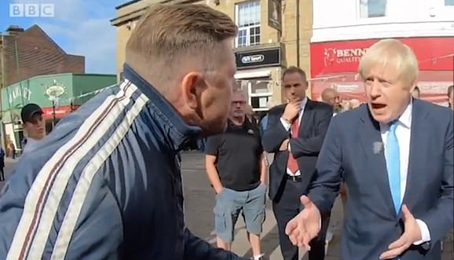
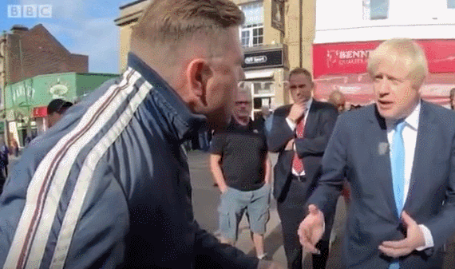
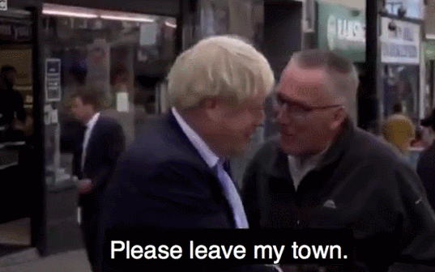

海外网
2019-09-26 15:36
约翰逊被英国一男子在街头质问：你该去布鲁塞尔谈判(图源：BBC)
海外网9月6日电 英国首相鲍里斯⋅约翰逊刚刚度过了糟糕的一周：3日，多名党内议员反水，约翰逊所在党失去议会多数席位;4日，阻止“硬脱欧”法案得通过，约翰逊提前大选的动议则被否决;5日，首相的亲弟弟宣布辞职。
不仅要受议会的气，更让约翰逊难堪的是，竟在街头被路人怼得语塞。据英国《每日邮报》5日消息称，约翰逊5日在西约克郡参加活动，在当地街道上一位英国男子“训斥”：“你应该去布鲁塞尔谈判，而不是出现在利兹。”
图源：BBC
约翰逊一时语塞，试图跟他解释，谈判一直都在继续。但这名男子不满地称：“你在玩游戏。”约翰逊随后反驳说：“我认为，人们希望我们在10月31日欧。”
在另一次街头互动中，一位路人亲切地拍了拍约翰逊的背，然后说到：“请离开我的小镇。”首相尴尬地笑着回答：“我会的，很快。”随后“请离开我的镇”登上了社交平台的热搜话题。
图源：BBC
据英国《卫报》、BBC消息，5日，约翰逊在西约克郡的一所警察培训学院发表讲话。当记者问他能否承诺不会去欧盟要求脱欧延期时，他表示，自己“愿死在沟里”，也不愿同意推迟脱欧时间。当时，现场不少人，包括站在约翰逊身后的警察，都忍不住笑了。
但当记者追问如果只能选择推迟，自己是否会辞职的问题时，约翰逊回避说：“我只是不……我真的需要……(待在欧盟)每个月花费10亿英镑，但毫无成效再拖延下去有什么意义？”在《卫报》看来，这是一场“语无伦次的演讲”。(海外网 张琪)
责编:蒋莉蓉